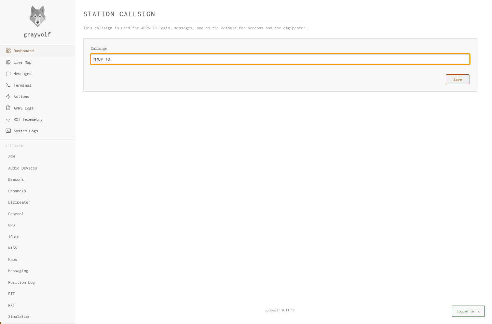
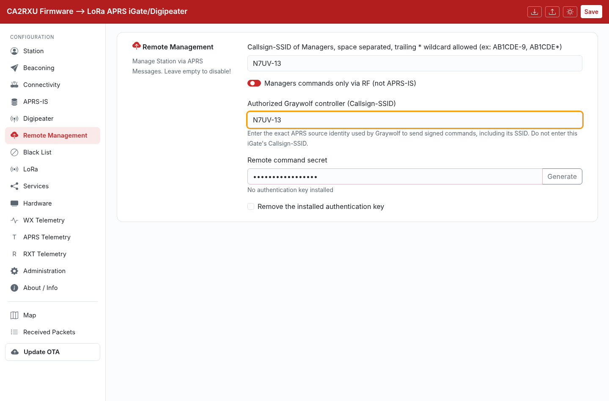
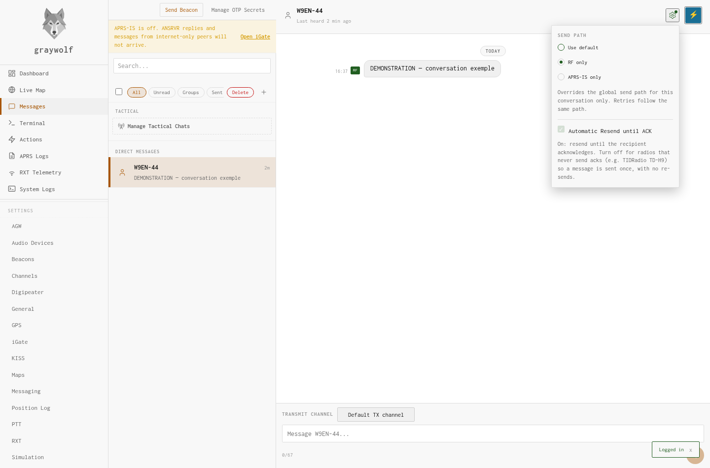
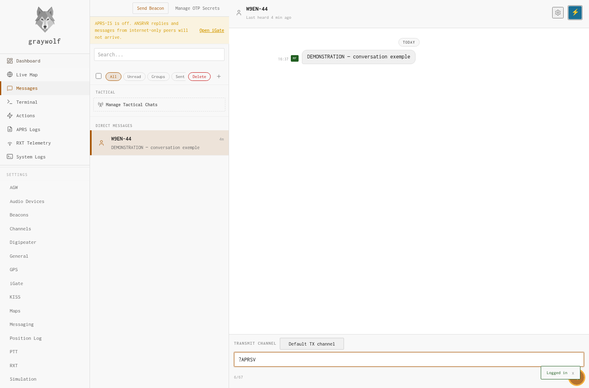
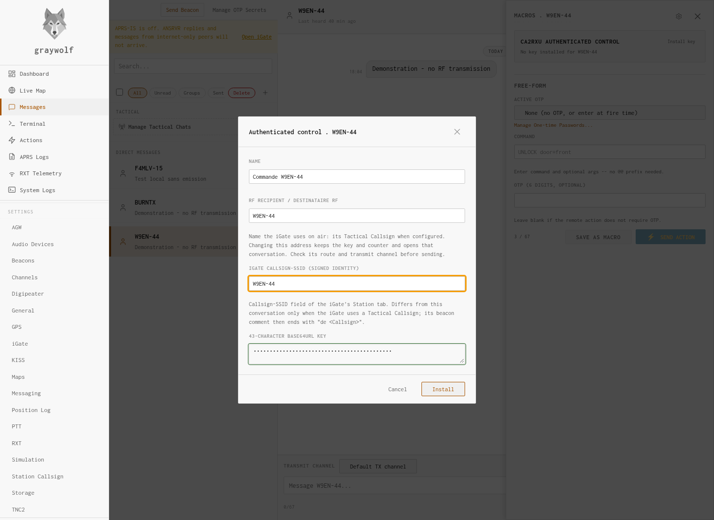
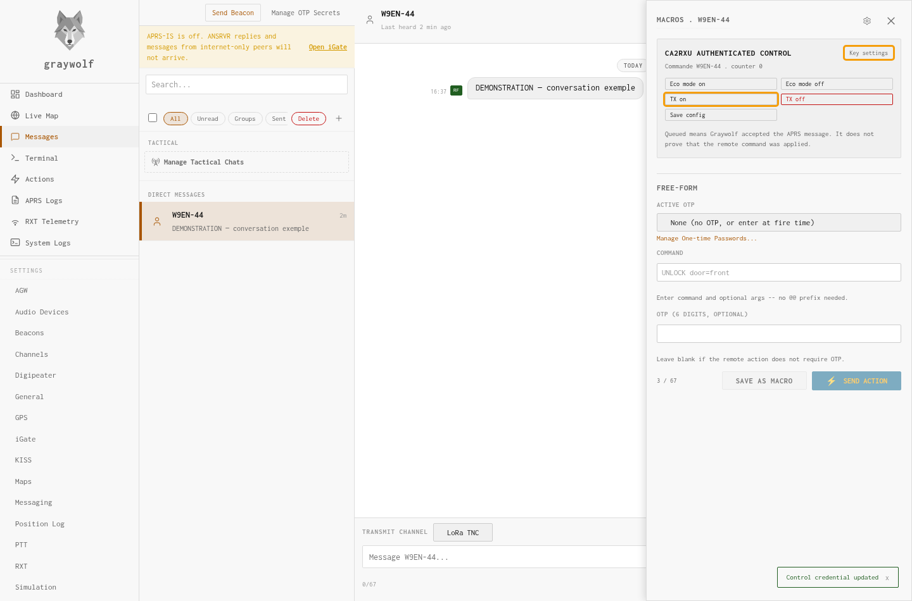

Control a LoRa iGate from Graywolf
The principle: install the same key on the iGate and in Graywolf, then use the ⚡ panel buttons to change settings.
This walkthrough requires RXT iGate firmware with Remote Command Authentication and a Graywolf RXT build offering CA2RXU authenticated control.
1. Identify the sending station
In Graywolf, open Settings → Station Callsign. Enter N7UV-13, then click Save.
This is the controller’s identity, including its SSID. It must exactly match the controller authorized on the iGate.
| Controller: Graywolf | Target station: iGate |
|---|---|
| N7UV-13 | W9EN-44 |
These callsigns are examples. This walkthrough works when the RF address and the iGate’s Callsign - SSID field are identical, here W9EN-44. If the device uses a different tactical callsign, address its on-air name and enter its Station Callsign-SSID as the signed identity, as described below.

2. Authorize Graywolf on the iGate
In the WebUI of iGate W9EN-44, open Remote Management.
- Under Callsign-SSID of Managers, add N7UV-13, keeping any existing managers. This field allows status queries, among other functions.
- Under Authorized Graywolf controller (Callsign-SSID), enter N7UV-13. Do not enter W9EN-44: this field identifies the station sending commands.
- For this radio-based walkthrough, enable Managers commands only via RF (not APRS-IS).
- For a first installation, click Generate next to Remote command secret. Copy the complete 43-character key and keep it for step 5.
- Click Save at the top of the page.
Already have a key installed? Reuse the matching copy. An empty field does not mean the key is missing: the iGate does not display its saved key again. Do not generate a new key on only one device.

3. Choose the destination and RF route
In Graywolf, open Messages, then the direct conversation with W9EN-44.
If you do not have a conversation yet: first open Settings → Messaging, select the RF only send policy and your LoRa TNC channel. Then click New message, enter W9EN-44 in To, and send ?APRSV to start the conversation.
- In the conversation header, click the small gear button: Conversation routing.
- Select RF only, then close the menu.
- Below the conversation, under Transmit channel, select the channel connected to your LoRa TNC. Its name depends on your configuration; the screenshots use LoRa TNC.
The TNC connected to Graywolf must allow transmission. A receive-only RXT/JSON feed cannot send commands. When using a TNC2 connection, its TX source identity must also match N7UV-13.

4. Check a simple exchange first
- In the normal message composer for W9EN-44, type
?APRSV. - Click the send arrow at the bottom right.
- Wait for the iGate’s version reply, starting with
CA2RXU_LoRa_iGate v.
This query changes no settings and needs no signature. It checks the message round trip before you test the key.
No reply? First check the destination, channel, TNC transmit permission and RF path. A missing reply does not yet show that the key is wrong.

5. Install the same key in Graywolf
- In the header of that same conversation, click the ⚡ button.
- In the drawer on the right, find CA2RXU authenticated control, then click Install key.
- Under Name, enter a descriptive name, such as W9EN-44 control. This label is up to you.
- Under iGate Callsign-SSID (signed identity), enter the iGate’s Callsign - SSID from its Station tab, here W9EN-44.
- Under 43-character Base64URL key, paste the key copied from the iGate in step 2, then click Install.
This is neither your Graywolf login password nor your APRS-IS passcode. A separate credential is stored for each target iGate.
The Manage OTP Secrets button and the macros in the same drawer belong to a different mechanism. For this walkthrough, use only CA2RXU authenticated control.

6. Send your first signed command
Once the key is installed, the CA2RXU authenticated control panel shows five buttons.
- For the first test, click TX on. If the iGate is already transmitting, this simply confirms the enabled state.
- Graywolf automatically prepares and signs the command. It displays TX=ON queued, followed by a counter.
- Look for the iGate’s reply in the conversation:
TX=ONorTX was ON. - You can then type
?TX=?in the normal composer to read back the state.
Queued means accepted for sending, not executed. Check the reply and resulting state. An APRS ACK confirms message receipt, not authenticated execution of the setting change.
Do not type ?TX=ON in the composer for this test: it would be an unsigned command, even with a key installed.

Devices with a tactical callsign
A device can have N7UV in the Station tab’s Callsign - SSID field and BURNTX as its Tactical Callsign. These values serve different purposes.
| Setting | Example |
|---|---|
| Authorized Graywolf controller | N7UV-13 |
| RF destination and Graywolf conversation | BURNTX |
| Target identity used to sign | N7UV — the device’s Callsign - SSID field |
The published firmware verifies the signature with N7UV, its Station Callsign-SSID. Graywolf addresses BURNTX while signing for N7UV.
Configure the signed identity: open the BURNTX conversation, then ⚡ → Key settings (or Install key). Set RF recipient / Destinataire RF to BURNTX and iGate Callsign-SSID (signed identity) to N7UV. If the key was installed under N7UV, edit that existing key instead of installing it again. Saving opens the RF destination conversation; check its route and channel. Leave the secret blank when editing an existing key and click Save: the key and counter are preserved. No firmware update is needed.
Keep BURNTX as this device’s RF command recipient. The device answers RF messages addressed to its tactical callsign. Ordinary messages and unsigned queries such as ?APRSV also remain addressed to BURNTX.
Read the device’s Callsign - SSID field to identify the value needed for signing. Its beacon’s de N7UV suffix can also provide this information.
After the first test
What the buttons do
| Button | Effect |
|---|---|
| Eco mode on / off | Enables or disables eco mode, when supported by the iGate’s operating mode. |
| TX on / off | Enables or disables radio transmission. TX off asks for confirmation and may interrupt RF replies. |
| Save config | Saves the current configuration for the next startup. Use it after making the desired change, not to install the key in Graywolf. |
Queries stay in the normal conversation
?APRSV reads the version. ?TX=? reads TX state and ?EM=? reads eco-mode state. The latter two queries require the sender to match the managers list and obey the RF-only restriction. They are not signed using the buttons.
If something does not work
| What you see | What to check |
|---|---|
| No CA2RXU panel | Check that your Graywolf RXT build includes this feature, that this is a direct conversation, and that you clicked ⚡ in its header. |
| Install key, but no five buttons | No key is stored for the exact callsign of this conversation. |
| AUTH REQUIRED | An unsigned setting change was received. Use the corresponding button in the ⚡ panel. |
| AUTH FAILED | Check the matching key, controller N7UV-13 and signed target identity, which must match the iGate’s Callsign - SSID field. With a tactical callsign, check the separate signed identity in Key settings while keeping the on-air name as recipient. The firmware console gives the precise rejection reason. |
| No reply | Repeat the ?APRSV check. Then check identities and transport restrictions: an unauthorized controller may be silently ignored. |
Do not delete and reinstall the same key to “fix” the counter. Graywolf would restart its counter while the iGate still remembers commands already received. If reprovisioning is necessary, install a fresh matching key on both devices.
Once setup is complete, later use is simply: Messages → iGate conversation → ⚡ → command button.